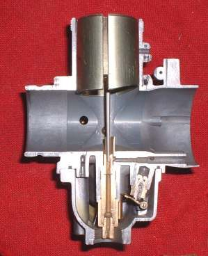
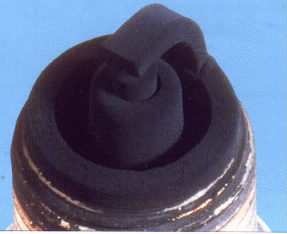

The engine is fine at idle and cruising, but when you open the throttle wide, climb a hill or carry a passenger it stutters, jerks or misses. Under load, the cylinder pressure is high, so a weak spark is the first to fail; and the engine needs the most fuel, so a restricted fuel supply shows up here first. Find out which with the steps below.
Is it safe to ride?
Yes, with care. Avoid overtaking and steep climbs until it is fixed; the engine may not respond when you need it.
Quick checks first
- Does the engine misfire (jerky, popping), or do the revs rise smoothly without the bike speeding up? Rising revs is clutch slip: see Clutch slips.
- Is the plug cap tight and the lead uncracked?
- Did it start after a fuel stop (bad fuel, water)?
- Is it worse in rain or after washing?
- Is it worse when the tank is low?
Diagnose it step by step
1Fit a new spark plug of the correct type and gap. Is the misfire gone?
- Yes: the old plug was worn. A worn plug needs more voltage to spark under pressure. Spark plug service (K-Light 125: gap 0.7 ± 0.1 mm; its manual lists this check for misfire).
- No: go to step 2.
2Is the misfire worse in wet weather, or is the plug lead or cap cracked or damp?
- Yes: high voltage is leaking to earth. Go to Misfires or dies in heavy rain and Test the ignition coil and plug cap.
- No: go to step 3.
3Does it only happen when the engine is hot, or only at high revs?
- Only hot: see Ignition cuts out when hot.
- Only at high revs, even unloaded: see Misfires only at high revs.
- Neither: go to step 4.
4Does the misfire go away for a while after you open the fuel cap, or is it worse when the tank is low?
- Opening the cap helps: Check the fuel tank vent.
- Worse on low fuel: fill up and retest. Then go to step 5.
5Carburettor bikes: does fuel flow strongly from the tap (ON and RES), with a clean filter?
- No: Check the fuel tap, lines and flow and replace the fuel filter.
- Yes: a low float level or partly blocked main jet starves the engine at full throttle. Check the float and clean the carburettor.
6Fuel-injected bikes: is a code stored, and does the pump buzz strongly at key-on?
- Code: Read engine fault codes.
- Weak or no buzz: Check the fuel pump. A workshop pressure test shows a weak pump or blocked filter.
- All normal: see Fuel injector suspected blocked or leaking.
7. Is there water in the fuel? Drain a sample into a clear jar. Water: Water or dirt in the fuel.
Use a road test to confirm the fix in the same conditions.
Causes, most likely first
| Cause | How to confirm | Fix |
|---|---|---|
| Worn plug or gap too wide | New plug cures it | Spark plug |
| Cracked lead, loose or damp cap | Worse when wet; sparks visible in the dark | Coil and cap test |
| Fuel restriction (vent, tap, filter) | Weak flow, better with cap open | Tap and lines |
| Low float level or dirty main jet | Flow good but starves at full throttle | Clean carburettor |
| Weak pump or blocked in-tank strainer (injection) | Low pressure at workshop | Fuel pump check |
| Water in fuel | Layer in jar | Drain fuel |
| Coil failing under load or heat | Weak spark when hot | Coil test |